A full redesign of the B2B gifting flow — the tool companies use to send trees as gifts to employees and clients. The old version was so confusing that customer service had to walk people through it. The new one doesn't need explaining.
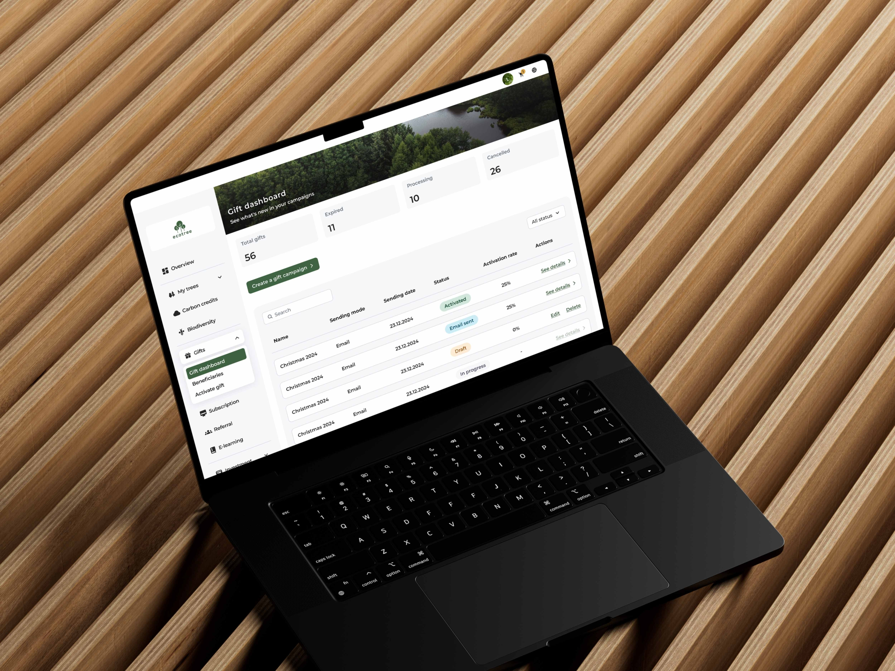
Impact
Company
EcoTree International
My role
Head of Design — led direction, remote from Copenhagen
Team
+ 1 Senior Designer (Paris), 1 UX Intern
EcoTree's gift flow lets companies send trees as gifts — a real product, used by real B2B clients. But the old version was a mess. Customer service was constantly fielding questions from people who couldn't figure it out on their own.
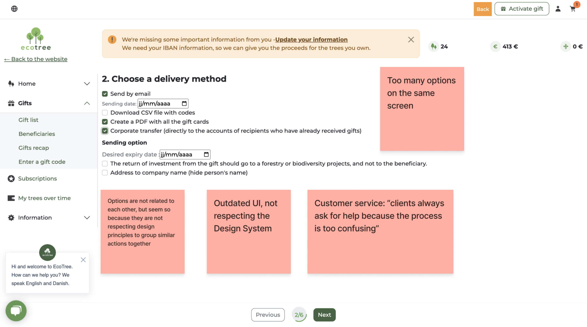
The old flow — multiple unrelated decisions on one screen, outdated UI, no design system alignment.
We ran a full UX audit of the existing flow and benchmarked it against other gifting and e-commerce products. Duolingo was an interesting reference — not for the content, but for how well it breaks complex flows into one decision at a time.
Three things came out of the benchmark that shaped the redesign: single-choice steps, clear feedback on what the user had already selected, and the ability to save progress and come back later.
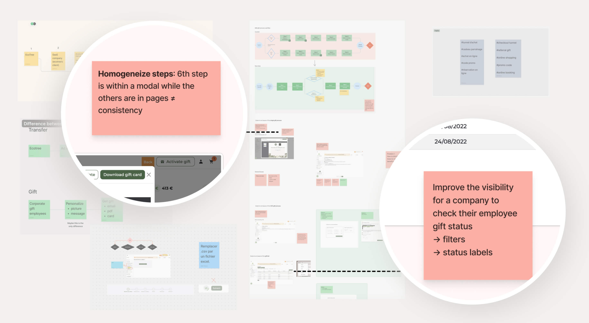
UX audit — documented every problem in the old flow before touching any new designs.
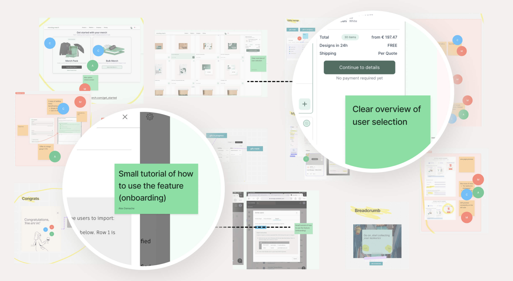
Benchmark — analyzed gifting and e-commerce flows for patterns that actually work.
The user flow came before the wireframes. We mapped out every decision point and reorganised them into a linear sequence — one choice per screen, in a logical order. That alone eliminated most of the confusion from the old version.
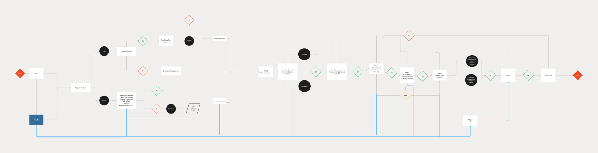
The new user flow — every decision mapped out before we built anything.
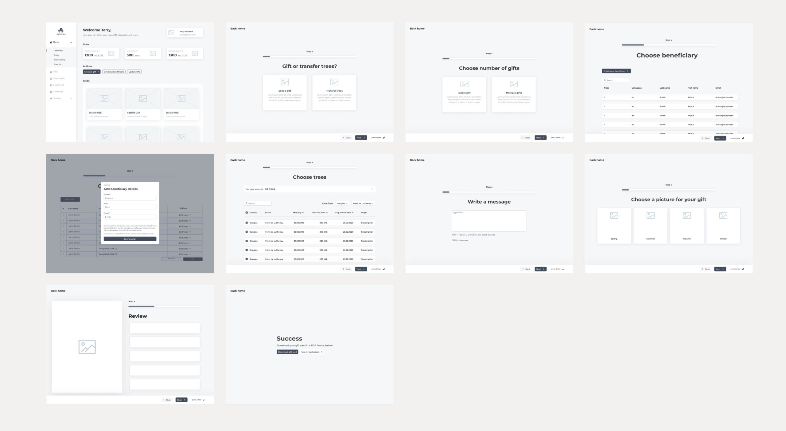
Wireframes — one task per screen, clear progress indicators, no dead ends.
The visual design followed the EcoTree design system throughout. Clean layouts, one clear action per step, nature-themed visuals that connect with the idea of gifting a tree. We also built in a gift preview so users could see the final card before sending — which removed a lot of the anxiety around "did I do this right?"
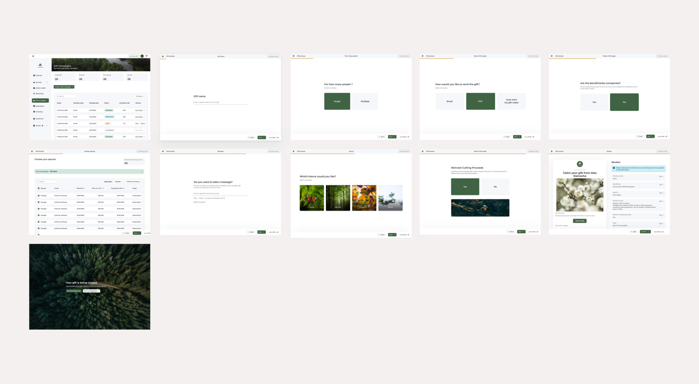
The full redesigned flow — each step clean, focused, and connected to the design system.
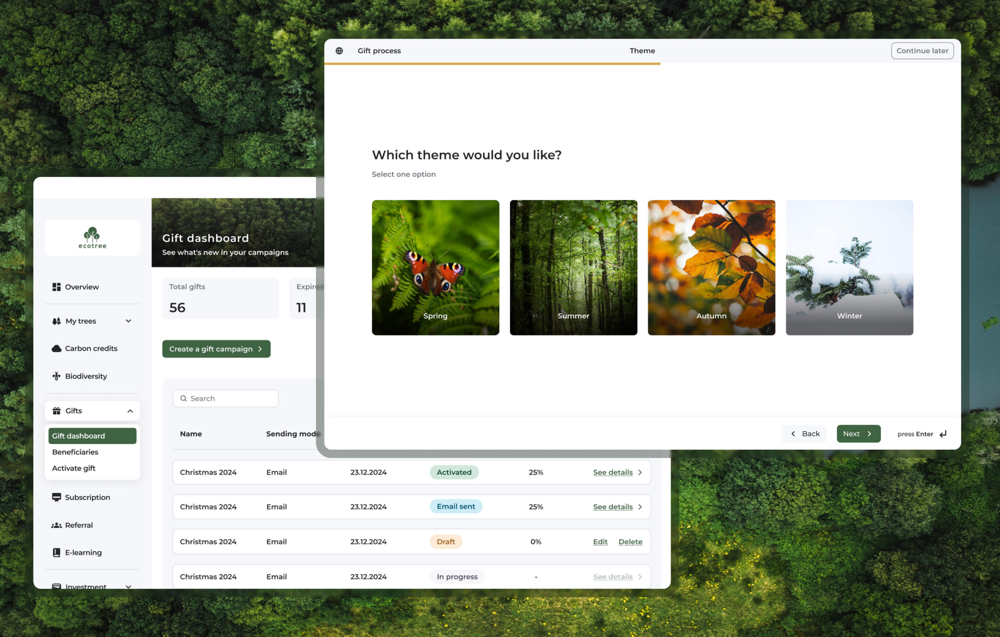
Desktop — theme selection step. One decision, four options, nothing else on screen.
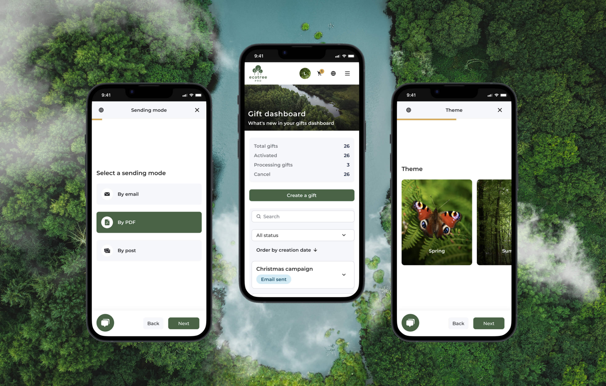
Mobile — the flow works across every screen size without compromise.
Two new features came directly from the research — both addressing real pain points we saw in the old flow.
Users can save their progress and come back later. Previously, leaving mid-flow meant starting over. Now it sits in the dashboard as a draft until they're ready.
Companies can see exactly where each gift is: draft, activated, email sent, email scheduled. No more contacting support to find out if a gift arrived.
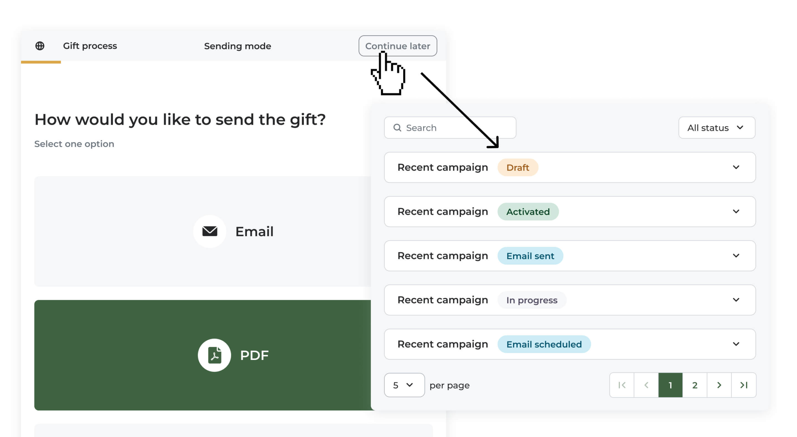
Single-choice steps, clear gift status, draft mode — the three things that changed the experience.
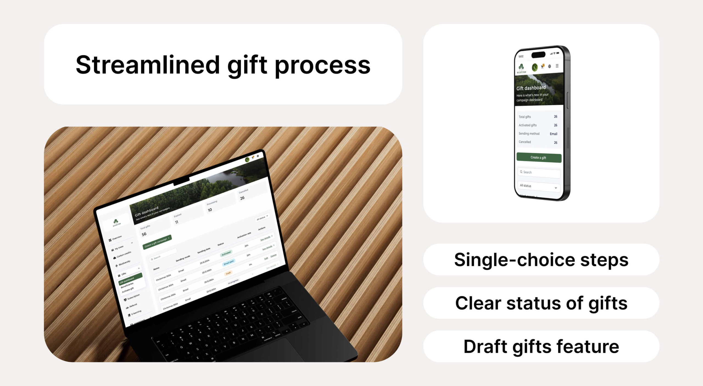
The final live product — built, shipped, and used by real companies.